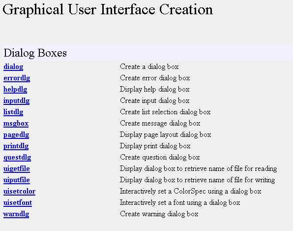
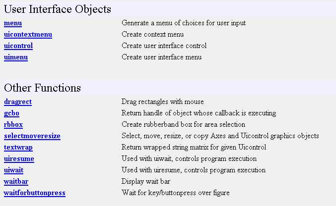
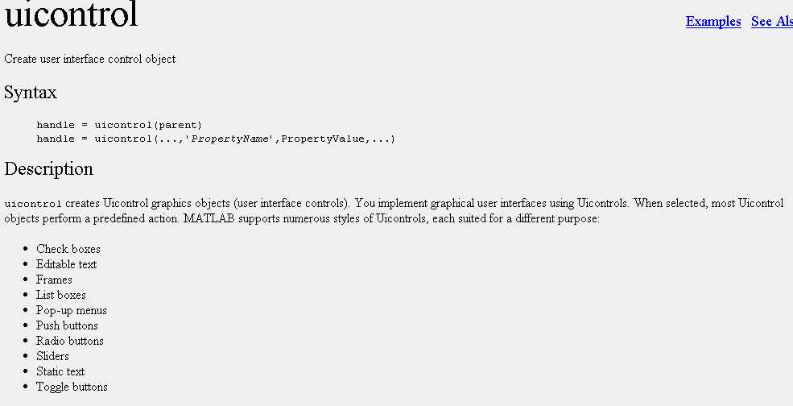

Knowledge og HG is very important in designing and implmenting a GUI in Matlab.
Once again using
the help desk the following information can be located regarding GUI creation


Much of the Controls needed for the GUI are in the uicontrol object

While it will be difficult to explore all the items here we will look at some useful ones.
The important thing to remember about GUI objects that we place on the screen is that:
The most difficult thing about GUI creation is the 'Callback' string. Some of the things to remember about the implementation of Callback are:All objects should be associated with a handle
The GUI is best designed using a Script file rather than interactivelyThe Callback is a string that will be passed to the eval function when the event corresponding to the control is triggered
For multiple MATLAB Commands/Statements enclose the entire callback string in square brackets. Make sure to include the final )
Enclose each MATLAB statement in 'single quote'
Quotes within a quoted string have double quotes like ' ' String ' '
Each statement will have a Comma or Semicolon within the quote - and a comma or space after the qoutes
Each line to be continued ends with three periods . . .
The Callback can be executed using (i) Scripts or (ii) Using Callback functions. We will use the first option
A very important consideration is that Callback strings are passed to eval and executed in the Command Workspace, while the rest of the code executes in the function workspace- including the GUI script function
Variables defined within functions are not availble in the Command Workspace and variables used in the Command workspace are not available in the function workspace.There is a lot more to know about GUI and Callback. Here we will only deal with basic design. In the next exercise we will construct a working GUI for the TPBVP program we developed in Matlab.Global variables can be used to transfer this data
Since GUI control elements report strings - particular attention must be paid to string to number conversion for using the numerical data